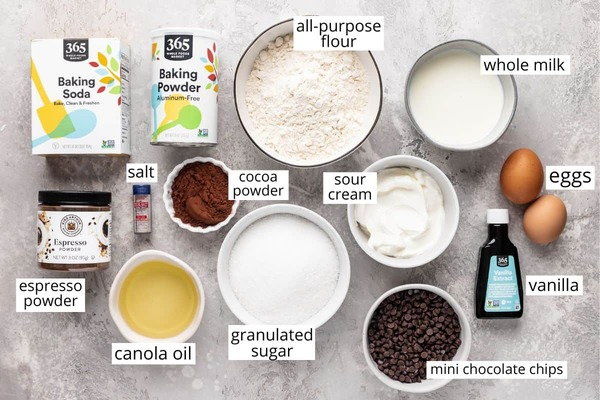

Cake Recipe
Ingredients:
- All-purpose flour
- Granulated sugar
- Unsweetened cocoa powder
- Espresso powder
- Canola oil
- Sour cream
- Whole milk
- Vanilla extract
- Mini chocolate chips
Instructions:
- Prepare two 6” round cake pans greased and lined with parchment paper.
- Preheat oven to 350 degrees F.
- Combine dry ingredients: flour, sugar, cocoa powder, baking soda, baking powder, sea salt, and espresso powder.
- Combine wet ingredients: canola oil, eggs, sour cream, milk, and vanilla.
- Mix wet and dry ingredients together.
- Fold in mini chocolate chips.
- Divide the batter into the cake pans.
- Bake for 30-35 minutes.
- Cool on a wire rack to room temperature.
Nutrition:
Serving: 1 slice | Calories: 217kcal | Carbohydrates: 28g | Protein: 3g | Fat: 11g | Saturated Fat: 3g | Cholesterol: 26mg | Sodium: 133mg | Potassium: 74mg | Fiber: 1g | Sugar: 20g | Vitamin A: 99IU | Vitamin C: 1mg | Calcium: 36mg | Iron: 1mg